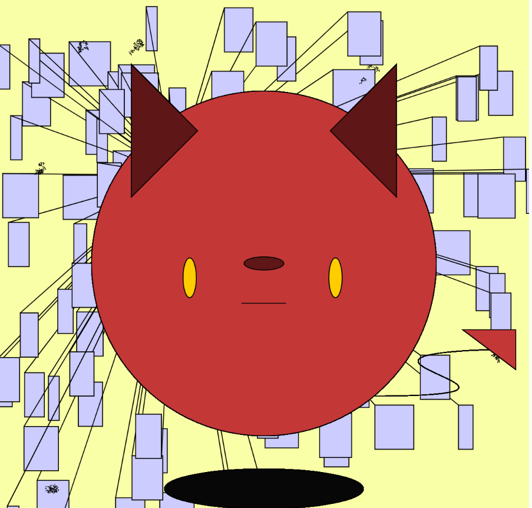
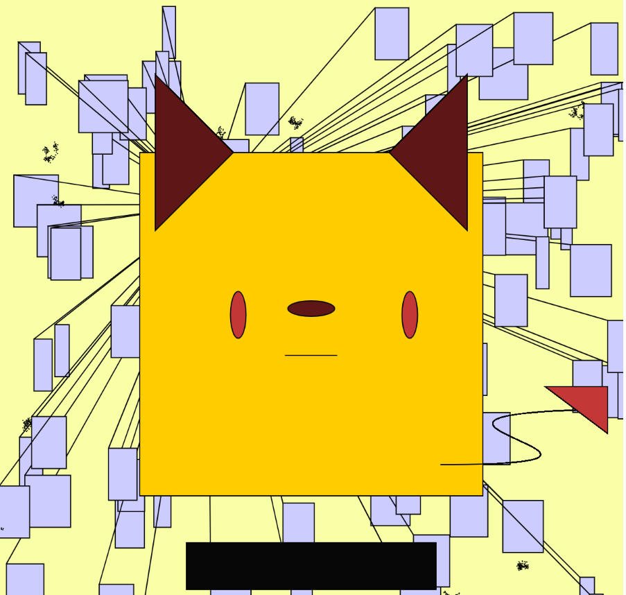

Avatar


Description
The avatar I created is a little demon that rules the underworld. The demon has two sides, the red represent anger and the yellow represents envy.
The demon links itself to the unlucky event that's happening on everyone in the world. The Ripping circle represents the natural/artificial disaster occurs in our worlds and the sound of our complaints changes the size of the circle
The demon also reflects the to ourselves, when we are dealing with our unlucky events, we will felt angry and sometimes envy why others are lucky than us.